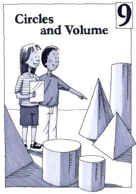

Chapter 9
Circles and Volume
Navigation is reserved for this future chapter. Add the chapter source later and these links can become active without changing the textbook structure.
Lessons
- 9 OpeningChapter 9 OpeningFuture unit
- 9.1.1Circumference, Diameter, and PiFuture unit
- 9.1.2Area of CirclesFuture unit
- 9.1.3Area of Composite ShapesFuture unit
- 9.2.1Surface Area and VolumeFuture unit
- 9.2.2Cross SectionsFuture unit
- 9.2.3Volume of a PrismFuture unit
- 9.2.4Volume of Non-Rectangular PrismsFuture unit
- 9 ClosureChapter 9 ClosureFuture unit
- 9.3.1Volume and ScalingFuture unit
- 9.3.2Using Multiple Math Ideas to Create an Interior DesignFuture unit
- 9.3.3Applying RatiosFuture unit